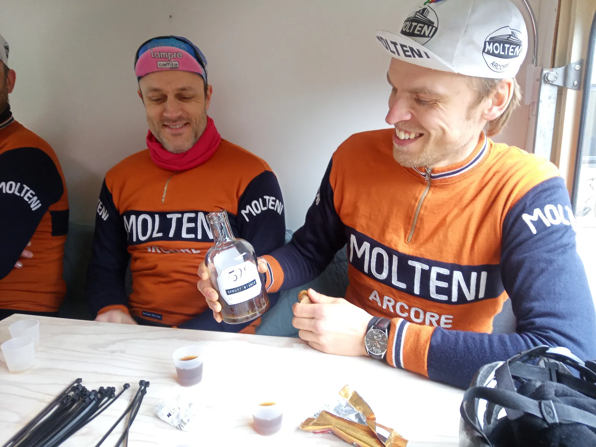
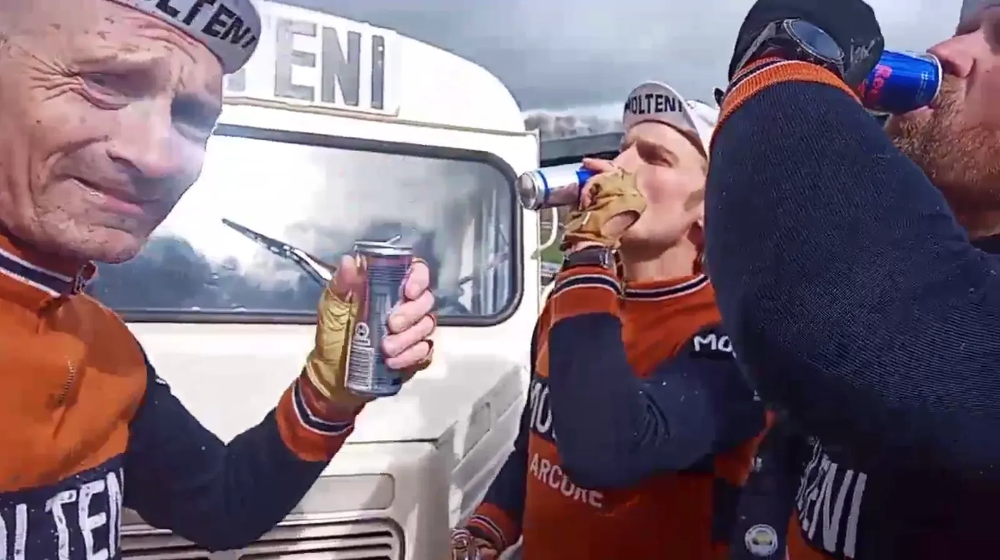

Spring Classic GRVL – små landeveje, grusveje, skovveje, helt og delvist opløste markveje – og sejr til Molteni.

Trods 3 skadede ryttere stillede Squadra Molteni til start ved Spring Classic GRVL med et 6-mandshold – og ryddede podiet i stålklassen
Squadra Molteni stillede til start med Grane Maaløe, Jens Langergaard, Pelle Clemmesen, Max Nielsen, Jeppe Thiemer og Kaptajn Bjørnsteen.

Efter en strategimøde i holdbussen, blev det besluttet, at løbet skulle køres forfra, og at den såkaldte belgiske knibtangsmanøvre skulle anvendes:
Kort efter starten lagde Kaptajn Bjørnsteen, Pelle Clemmesen og Max Nielsen voldsomt fra land. Da de rystede carbonryttere kørte kontra, gik Max med. Kaptajnen og Jeppe afventede og i feltet bakkede Jens og Grane af.

– Jeg har haft lidt ond i ryggen det senest stykke tid. Men da kaptajnen ringede og sagde, at holdet havde brug for mig, ja, så tog jeg en triple Trappist og et stop Sweet Dublin, og rettede selvfølgelig ind, lyder det fra Max.
– Og jeg havde sgu gode ben. Men gruppe af carbonryttere må have ligget langt oppe i det røde felt, for de nåede at køre forkert 2 gange.
Da Max’s førergruppe efter godt 10 km kørte forkert og måtte vende om, angreb Jeppe Thiemer og Kaptajn Bjørnsteen – og gik i et solo udbrud. De to havde et forbilledligt samarbejde, og de fik hurtigt et stort forspring.

– Det gik over stok og sten, og Kaptajnen var en maskine, og jeg måtte køre à bloc for at hænge på. På et tidspunkt, hvor vi hamrer ud af en grusvej med over 45 km/t, ser jeg en mand med en Jumbo Visma trøje i vejkanten. Jeg når lige at se, at han hiver en mobiltelefon op og råber i røret: “Sig til Wout, at jeg har fået en idé…”, fortæller Jeppe.
Max “Maximus” Nielsen kører alene fra sin gruppe og op til Jeppe Thiemer og Kaptajn Bjørnsteen. Molteni-trioen tordner ud af de små lande- og grusveje, men … flere gange går den velsmurte Molteni-maskine i stå:
– Flere gange må vi sande, at vores 28 mm dæk kom til kort. Arrangørerne har åbenbart synes, at vi skulle have lidt ekstra udfordringer, for flere sektorer var helt og delvist opløste markveje, som mest af alt mindede om en Nutellamad, der har stået for længe i solen, fortæller Kaptajn Bjørnsteen.
Molteni-trioen holdt til mål, og kunne køre en sikker trippel-sejr hjem til Squadra Molteni.
– Med flotte referencer til Mapei-GB på Velodrome Roubaix i 1996, kørte Molteni-trioen køre ind på Odder Velodrome. Det var et smukt syn, lyder det fra en tydelig tilfreds løbsarrangør, Mads Christensen.

★★★★★
Spring Classic GRVL – et fantastisk velarrangeret forårsløb, som man kun kan elske, får 5 stjerner.